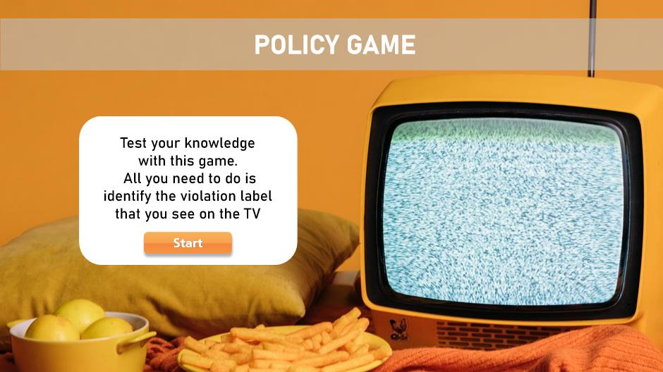
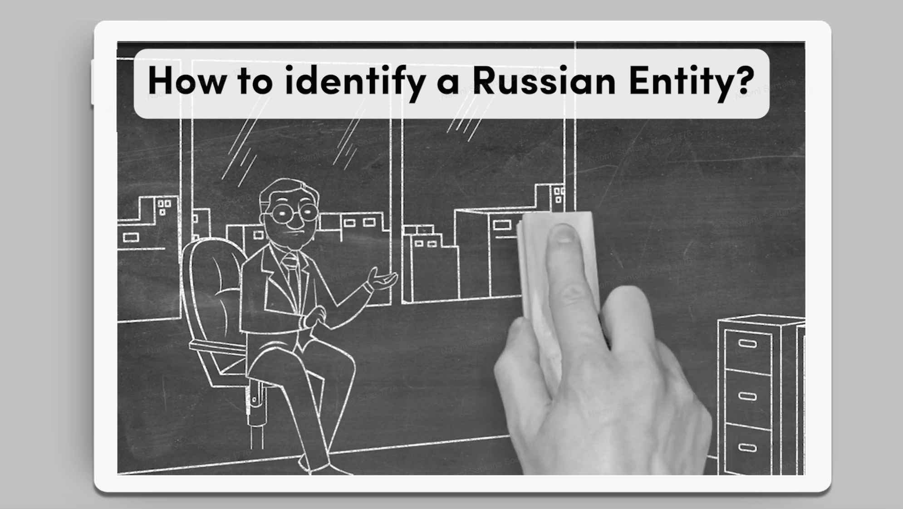
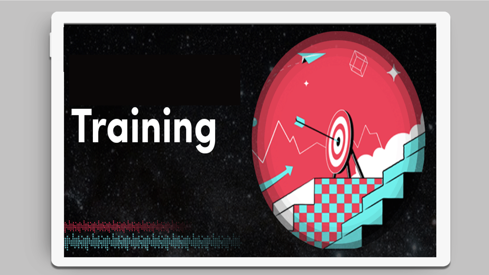

Strategy and performance
Business goals, workflow realities, audience needs, and measurable outcomes before solution selection.
About
I start with the work, not the course. I clarify the business result, the people involved, the performance expected, and the barriers getting in the way. Then I align stakeholders around the lightest effective response and carry quality from discovery through delivery and improvement.
I bring structured analysis, calm prioritisation, multilingual communication, and responsible use of technology to fast moving work. I work in English, Spanish, and French, hold Google UX Design and Program Management certificates, and am completing an MSc in Artificial Intelligence for Business.
Business goals, workflow realities, audience needs, and measurable outcomes before solution selection.
Clear decisions, ownership, priorities, dependencies, risks, and review gates that keep work moving.
The right mix of guidance, practice, support, assessment, accessibility, reinforcement, and evidence.
Projects
Explore work across analysis, AI adoption, scenario practice, global compliance, urgent enablement, workflow support, and live delivery. Each case shows the context, contribution, design decisions, and evidence available to share.
 PROJECT 01 · AI ADOPTIONReviewer Onboarding: AI AssistA fictional onboarding journey for confident, accountable use of an AI supported review workflow.Contribution: learning journey, scenario practice, decision supportView project
PROJECT 01 · AI ADOPTIONReviewer Onboarding: AI AssistA fictional onboarding journey for confident, accountable use of an AI supported review workflow.Contribution: learning journey, scenario practice, decision supportView project

PROJECT 02 · SCENARIO PRACTICEScenario Based Policy PracticeA television and remote simulation with progressive onboarding, judgement choices, feedback, and retry logic.Includes verified live statesContribution: storyboarding, interaction design, assessmentView project PROJECT 03 · CURRICULUM & LMSGlobal Compliance Learning at ScaleA reusable LMS template shared across regional teams within a wider 15 course compliance programme.Includes edited Absorb layout examplesContribution: template design, curriculum, LMS operationsView project and interface examples
PROJECT 03 · CURRICULUM & LMSGlobal Compliance Learning at ScaleA reusable LMS template shared across regional teams within a wider 15 course compliance programme.Includes edited Absorb layout examplesContribution: template design, curriculum, LMS operationsView project and interface examples

PROJECT 04 · RAPID ENABLEMENTRapid Compliance MicrolearningComplex guidance translated into concise multimedia learning for an urgent requirement.Contribution: scripting, multimedia design, reviewView project
PROJECT 06 · LIVE DELIVERYInstructor Led Training DecksPresentation materials for clear explanation, guided discussion, practice, and consistent live delivery.Contribution: learning design, presentation design, delivery supportView projectMetrics & evidence
Four selected indicators are presented as evidence stories rather than isolated numbers. Each one separates the reported result, the change in work, and the boundary of the claim.
Effectiveness & impact
Assessment asks: What does the learner know or demonstrate? Evaluation asks: Did the learning solution achieve its intended result? A test score is one signal, not the whole evaluation. The strength of the claim determines the evidence required.
Use clear prompts and feedback to support learning at the required cognitive level.
Keep the content aligned to the work, but use the result as an instructional signal, not a gateway decision.
Evidence standard
Select a value to examine its question, risk, and design response.
Selected quality lens
Supports accurate score interpretation by measuring the right content at the right cognitive level.
North star: the other values provide evidence that the intended score interpretation is trustworthy.
Blueprint trace
PNA/RWA produces task and objective inputs; the blueprint defines cognitive demand, sampling, and evidence.
Upstream analysis
Clarify purpose, audience, and intended score use.
Define workflows, tasks, knowledge, and performance expectations.
Transfer tasks and performance objectives into the blueprint.
Start with the performance
Rapid Workflow Analysis defines the critical task and knowledge needed to meet the performance expectation. These outputs become the blueprint’s starting inputs.
Testing convenient course content instead of the work that the score is meant to represent.
A passing result can support minimum policy skill under assessed conditions. It does not prove sustained job performance or business impact.
Did learners gain or demonstrate the required knowledge and skill?
Can learners apply it with the right support in the flow of work?
Did relevant operational outcomes such as time, volume, reach, or cost change?
How I lead the work
I make the decisions, ownership, risks, and evidence visible. Then I align the lightest effective response around the work.
Align the result, audience, scope, constraints, ownership, and decision rights.
Map the work, conditions, assumptions, risks, and evidence gaps before selecting a solution.
Orchestrate communication, guidance, practice, learning, support, and coaching around the work.
Validate quality, observe evidence, and adapt, scale, stop, or strengthen the response.
Learning ecosystem
Formal learning is one part of a system. I design only the support the work requires.
Direction, standards, roles, communication, and accessible guidance.
Examples, scenarios, job aids, feedback, and workflow prompts.
Coaching, peer support, adoption, quality, speed, confidence, and business evidence.
Leadership in practice
I clarify the result and owner, map the work and audience, separate symptoms from causes, and prioritise the tasks with the greatest risk or value. I then propose the right ecosystem instead of automatically recommending a course. I define owners, review points, measures, and trade offs.
Management signalSystems thinking · Strategic alignment · Stakeholder influence
I reduce scope before standards. I protect the fixed outcome, critical practice, accuracy, accessibility, and launch risk, assign owners, use short expert reviews, and move less valuable polish into measured iteration.
Management signalCalm prioritisation · Delivery leadership · Risk management
I test expectations, tools, feedback, consequences, capability, capacity, and motivation. If the barrier is the workflow, system, ownership, or environment, I recommend that change. Learning is for gaps in capability, practice, judgement, or reinforcement.
Management signalPerformance consulting · Commercial judgement · Cause analysis
I set outcomes, standards, decision rights, dependencies, and done criteria. I match work to expertise, delegate with context, review while feedback is useful, remove blockers, surface risk early, and turn reviews into coaching.
Management signalTeam enablement · Collaboration · Communication
L&D management capabilities
Contact
I’m interested in L&D management, learning strategy, instructional design, AI enablement, compliance learning, onboarding, and performance support opportunities. Selected work is shown with confidential details removed.